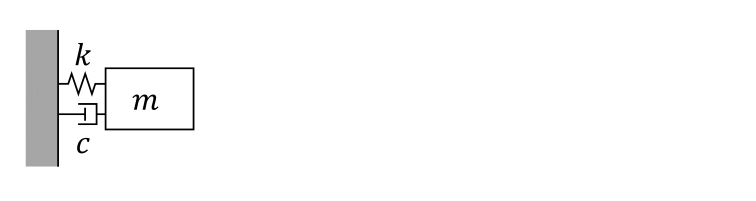
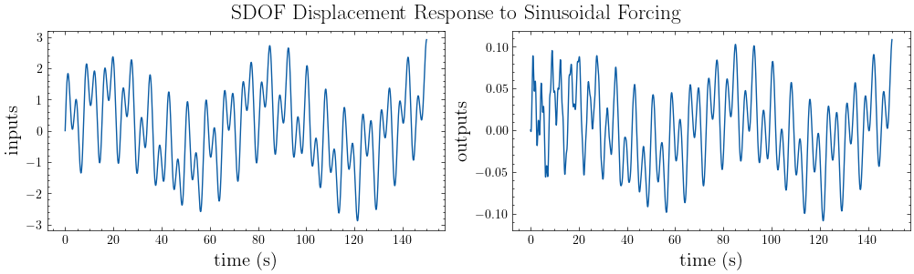
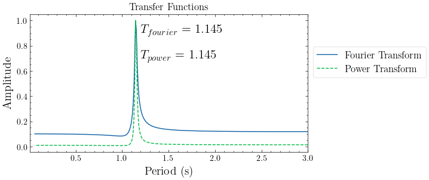
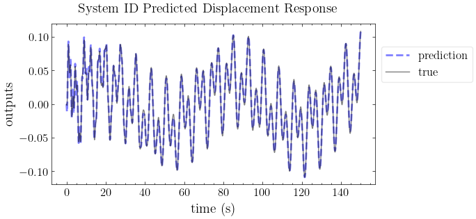
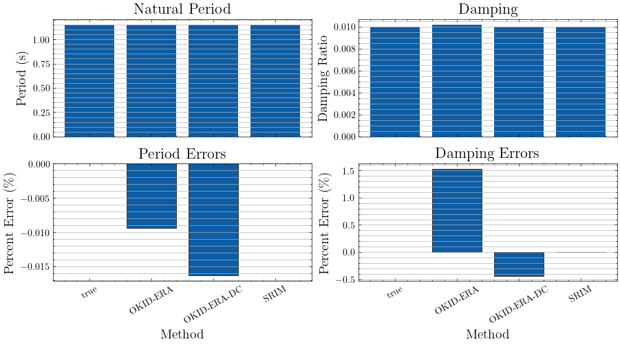
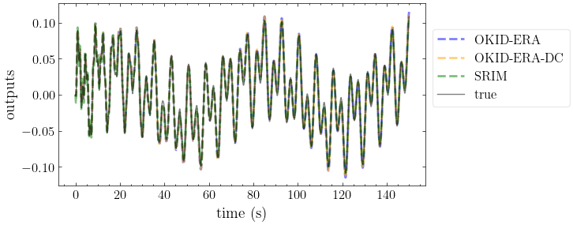

Introduction to SISO#
[1]:
import numpy as np
from mdof.utilities.printing import *
from mdof.utilities.testing import test_method
from mdof.utilities.config import Config
import mdof
from mdof import modal, transform
import scienceplots
plt.style.use(["science"])
Define a SDOF system#
parameter |
value |
|---|---|
m |
mass |
k |
stiffness |
c |
damping coefficient |
nt |
number of timesteps |
dt |
timestep |

[2]:
# parameters of SDOF system
mass = 1 # mass
k = 30 # stiffness
zeta = 0.01 # damping ratio
omega_n = np.sqrt(k/mass) # natural frequency (rad/s)
Tn = 2*np.pi/omega_n # natural periods (s)
c = 2*zeta*mass*omega_n # damping coefficient
print(f"natural period: {Tn:<3.5}s")
print(f"damping ratio: {zeta}")
# forcing frequencies (rad/s)
omega_f = [0.017*omega_n, 0.14*omega_n, 0.3*omega_n]
print(f"forcing periods: {omega_f}")
natural period: 1.1471s
damping ratio: 0.01
forcing periods: [np.float64(0.09311283477587824), np.float64(0.7668115805072326), np.float64(1.6431676725154982)]
[3]:
# forcing function (input)
nt = 5000 # number of timesteps
dt = 0.03 # timestep
tf = nt*dt # final time
t = np.arange(start = 0, stop = tf, step = dt)
f = np.sum(np.sin([omega*t for omega in omega_f]), axis=0)
[4]:
# displacement response (analytical solution) (output)
omega_D = omega_n*np.sqrt(1-zeta**2)
y = np.zeros((len(omega_f),nt))
for i,omega in enumerate(omega_f):
C3 = (1/k)*(1-(omega/omega_n)**2)/((1-(omega/omega_n)**2)**2+(2*zeta*omega/omega_n))**2
C4 = -(2*zeta*omega/omega_n)*(1-(omega/omega_n)**2)/((1-(omega/omega_n)**2)**2+(2*zeta*omega/omega_n))**2
C1 = -C4
C2 = (zeta*omega_n*C1-omega*C3)/omega_D
y[i,:] = np.exp(-zeta*omega_n*t)*(C1*np.cos(omega_D*t)+C2*np.sin(omega_D*t)) + C3*np.sin(omega*t) + C4*np.cos(omega*t)
y = np.sum(y,axis=0)
[5]:
# plot input vs. output
io_fig = plot_io(inputs=f, outputs=y, t=t, title="SDOF Displacement Response to Sinusoidal Forcing")

Perform System Identification#
Transfer Function Methods#
[6]:
# Set parameters
conf = Config()
conf.damping = zeta
conf.period_band = (0.01,3) # Period band (s)
# A place to store models and their predictions
transfer_models = {}
# Generate a transfer function representation of the system
transfer_models["Fourier Transform"] = transform.fourier_transfer(inputs=f, outputs=y, step=dt, **conf)
transfer_models["Power Transform"] = transform.power_transfer(inputs=f, outputs=y, step=dt, **conf)
# Determing the fundamental frequency
fourier_periods, fourier_amplitudes = modal.spectrum_modes(*transfer_models["Fourier Transform"],height=0.2)
power_periods, power_amplitudes = modal.spectrum_modes(*transfer_models["Power Transform"],height=0.2)
plot_transfer(transfer_models, title="Transfer Functions")
color_cycle = plt.rcParams['axes.prop_cycle'].by_key()['color']
plt.text(fourier_periods[0]+0.05,0.9,r"$T_{fourier}$ = "+str(np.round(fourier_periods[0],3)),fontsize=15)
plt.text(power_periods[0]+0.05,0.7,r"$T_{power}$ = "+str(np.round(power_periods[0],3)),fontsize=15)
plt.xlim(conf.period_band);

State Space Methods#
[7]:
# Generate a state space realization of the system
A,B,C,D = mdof.system(inputs=f, outputs=y, r=2)
# Obtain natural period and damping ratio from the state space model
ss_modes = modal.system_modes((A,B,C,D),dt,outlook=190)
print_modes(ss_modes, Tn=Tn, zeta=zeta)
Spectral quantities:
T(s) ζ EMACO MPC EMACO*MPC T % error ζ % error
1.147 0.01 0.3955 1.0 0.3955 3.484e-13 -1.735e-14
Mean Period(s): 1.1471474419090992
Standard Dev(s): 0.0
[8]:
# Reproduce the response with the state space model
y_mdof = mdof.predict(realization=(A,B,C,D), inputs=f)
pred_fig = plot_pred(ytrue=y, models=y_mdof, t=t, title="System ID Predicted Displacement Response")

Breakdown of State Space Methods#
General Parameters#
parameter |
value |
|---|---|
|
number of output channels |
|
number of input channels |
|
number of timesteps |
|
timestep |
|
decimation (downsampling) factor |
|
model order (2 times number of DOF) |
Parameters for Mode Validation#
parameter |
value |
|---|---|
|
number of steps used for temporal consistency in EMAC |
Method Inputs#
[9]:
# Set parameters
conf = Config()
conf.m = 300
conf.horizon = 140
conf.nc = 140
conf.order = 2
conf.a = 0
conf.b = 0
conf.l = 10
conf.g = 3
# A place to store models and their predictions
models = {}
Specific to Observer Kalman Identification (OKID)#
parameter |
value |
|---|---|
|
number of Markov parameters to compute (at most = nt) |
Specific to Eigensystem Realization Algorithm (ERA)#
parameter |
value |
|---|---|
|
number of observability parameters, or prediction horizon |
|
number of controllability parameters |
OKID-ERA#
[10]:
# OKID-ERA
method = "okid-era"
models[method] = test_method(method=method, inputs=f, outputs=y, dt=dt, t=t, **conf)
print_modes(models[method]["modes"], Tn=Tn, zeta=zeta)
Spectral quantities:
T(s) ζ EMACO MPC EMACO*MPC T % error ζ % error
1.147 0.01015 0.0 1.0 0.0 -0.009354 1.526
Mean Period(s): 1.147040134226514
Standard Dev(s): 0.0
Specific to Data Correlations (DC)#
parameter |
value |
|---|---|
|
(alpha) number of additional block rows in Hankel matrix of correlation matrices |
|
(beta) number of additional block columns in Hankel matrix of correlation matrices |
|
initial lag |
|
lag (gap) between correlations |
OKID-ERA-DC#
[11]:
# OKID-ERA-DC
method = "okid-era-dc"
models[method] = test_method(method=method, inputs=f, outputs=y, dt=dt, t=t, **conf)
print_modes(models[method]["modes"], Tn=Tn, zeta=zeta)
Spectral quantities:
T(s) ζ EMACO MPC EMACO*MPC T % error ζ % error
1.147 0.009956 0.0 1.0 0.0 -0.01633 -0.4366
Mean Period(s): 1.1469601625849053
Standard Dev(s): 0.0
Specific to System Realization with Information Matrix (SRIM)#
parameter |
value |
|---|---|
|
number of steps used for identification, or prediction horizon |
SRIM#
[12]:
# SRIM
method = "srim"
models[method] = test_method(method=method, inputs=f, outputs=y, dt=dt, t=t, **conf)
print_modes(models[method]["modes"], Tn=Tn, zeta=zeta)
Spectral quantities:
T(s) ζ EMACO MPC EMACO*MPC T % error ζ % error
1.147 0.01 0.0 1.0 0.0 -1.742e-13 -3.676e-11
Mean Period(s): 1.1471474419090932
Standard Dev(s): 0.0
Compare Methods#
[13]:
plot_models(models, Tn, zeta)

[14]:
pred_fig_compare = plot_pred(ytrue=y, models=models, t=t, title=None)
